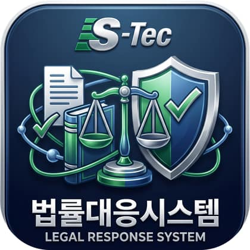
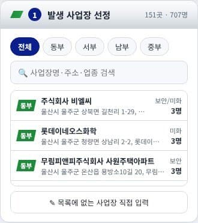
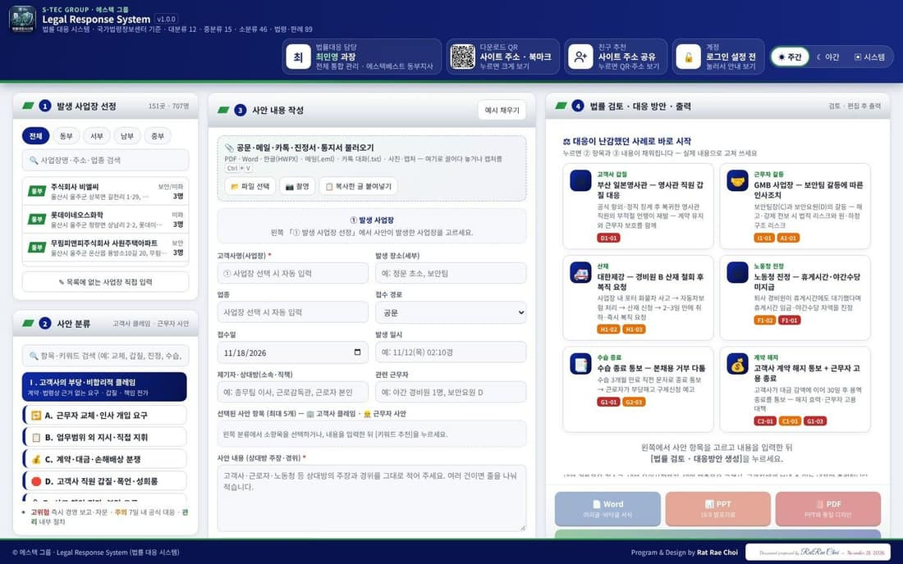
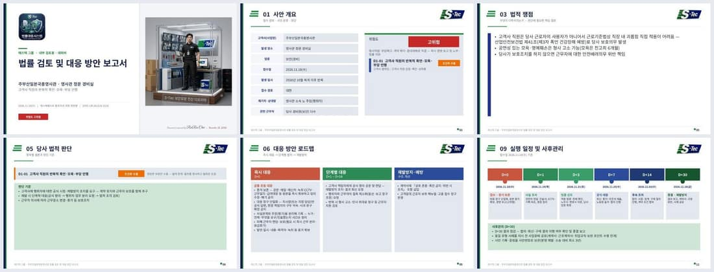
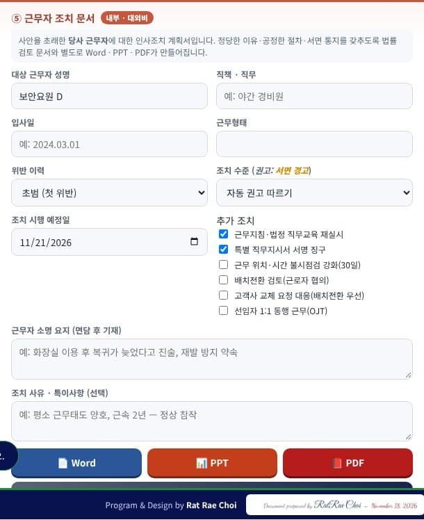
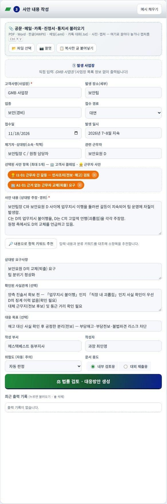
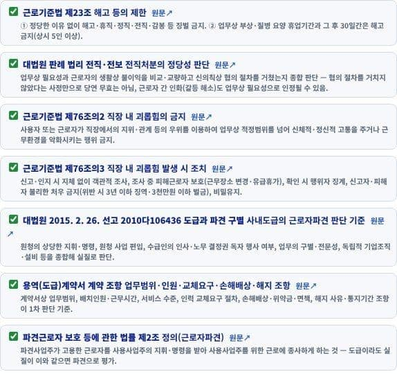
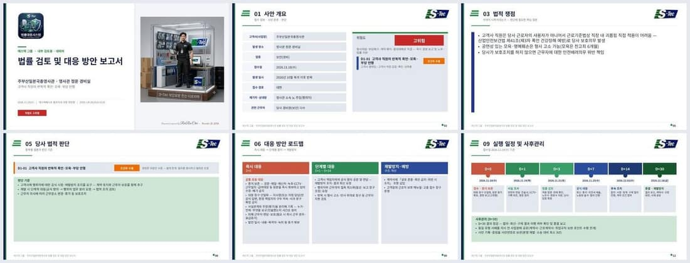
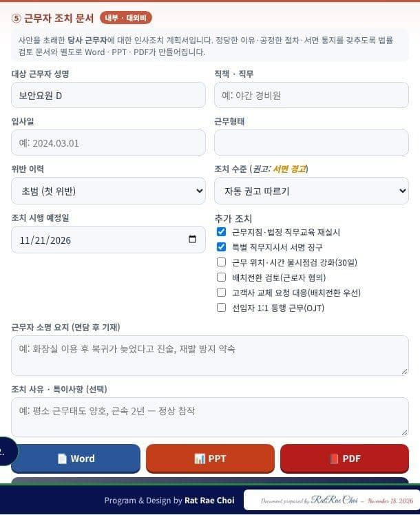
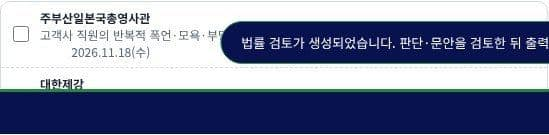

Legal Response System
법률 대응 시스템
사용자 매뉴얼
User Manual
법률 대응 시스템 — 사용 방법 (v1.1.4)

구분 | 내용 |
|---|---|
대상 | 프로그램을 쓰는 모든 사용자 |
프로그램 버전 | v1.1.4 |
주소 | https://sadness500-boop.github.io/s-tec-legal-response-system/ |
차례
01 최신 버전 안내 (v1.1.4)
02 12개 프로그램 공통 화면
03 프로그램 소개
04 설치와 접속
05 로그인
06 처음 실행 — 법률대응 담당 지정
07 상단 기능
08 ① 발생 사업장 선정
09 ② 사안 분류
10 대표 사례로 바로 시작
11 접수 원문 불러오기
12 ③ 사안 내용 작성
13 ④ 법률 검토 생성 · 편집
14 관계 법령 · 판례 확인
15 문서 용도와 출력
16 ⑤ 근무자 조치 문서
17 출력 기록 관리
18 다운로드 QR · 친구 추천 · 화면
19 자주 묻는 질문
1. 최신 버전 안내 (v1.1.4)
요점 이 매뉴얼은 v1.1.4 기준 · 이전 매뉴얼 v1.1.3 이후 바뀐 점 · 최신 화면 사진
이 매뉴얼은 법률 대응 시스템 v1.1.4 기준입니다. 이전 매뉴얼(v1.1.3) 이후 바뀐 점을 아래에 모았고, 각 장의 설명은 이전 매뉴얼 내용을 바탕으로 합니다. 2026년 11월 22일에 12개 프로그램의 상단 · 하단 · 글씨체 · 화면 배치를 통일했습니다(「12개 프로그램 공통 화면」 장).

그림 1. v1.1.4 메인 화면
바뀐 점 |
|---|
사용자 매뉴얼 최신 버전으로 다시 작성(Word · PPT · PDF · 웹), 제작자 관리매뉴얼 보관함 올리기 · 삭제(제작자만), 기준정보 조직 구분 추가 |
현재 화면 정식 배포 · 아이폰 홈 화면 앱 지원 |
함께 쓰는 사이트 → 메인 프로그램 카드, 하단 좌·우 배치 · 제작자/날짜 간격, 근태관리 상단 선, 결과 칸 위로 |
에스텍 그룹 기준 · 사업장 목록 기준정보 연동, 글씨체 · 기본 글씨 크기 통일, 하단 서명 반짝임 제거, 빈 공간 없는 메인 화면 배치 |
상단 「The Best Choice」 삭제 · 프로그램명 버튼 높이로 축소, 하단 서명 · 날짜 왼쪽과 같은 글씨체, 하단 불필요 문구 삭제 |
법률대응팀 사진 사각형 표시·테두리 부드럽게 |
메인 화면 「에스텍 법률대응팀」 3D 스테이지 배치 |
상단·하단 보완 — 모바일 줄바꿈·서명 크기, 원래 Things to enjoy 숨김(함께 쓰는 사이트로 통일), 하단 배경 충돌 수정, 아이콘 늦게 채워지는 프로그램 대응 |
상단·하단·함께 쓰는 사이트·프로그램별 사용자 매뉴얼 통일 |
제작자 관리매뉴얼 — 제작자만: 공개 파일·배포본에서 빼고 서버 비공개 보관함(owner-docs)에서 제작자 계정에게만 보기·내려받기 (통합관리시스템 공통) |
공통 상단 버튼(통합관리시스템과 같은 모양·새 아이콘): 사용자 매뉴얼 · 내 정보 · QR · 친구추천 · 화면 크기 · 테마 · 제작자 관리 콘솔(제작자만)/조직관리자 관리콘솔 · 계정 |
회사·조직별 공개 잠금 화면 (소속 조직에 공개되지 않은 프로그램 안내) |
상단 안내 글씨 삭제, 아이콘·명칭을 카드 줄 가운데로 |
② 사안 분류 확대 · 사안 6개 갈래 76개 항목 · 법령·판례 115개 |
공통 기준정보(회사·조직·사업장) 연결 · 「📂 자료」 엑셀 양식·작성 안내서(PDF)·불러오기 |
사용자 매뉴얼 · 제작자 관리 사용매뉴얼 v1.0.0 (Word · PPT · PDF) |
2. 12개 프로그램 공통 화면
요점 상단: 아이콘 · 에스텍 그룹 · 버전 · 프로그램명 · 기능 버튼 · 하단: 에스텍 그룹 · 프로그램명 | 제작자 · 오늘 날짜 · 같은 아이디로 12개 프로그램 · 📂 자료 — 에스텍 그룹 공통 기준정보
에스텍 운영 및 영업 통합관리 시스템(메인)과 11개 프로그램은 상단 · 하단 모양과 버튼이 모두 같습니다. 한 프로그램에서 익힌 사용법을 다른 프로그램에서도 그대로 쓸 수 있습니다.
상단

그림 2. 상단 — 왼쪽 아이콘 · 에스텍 그룹 · 버전 · 영문 · 한글 프로그램명, 오른쪽 기능 버튼
왼쪽 아이콘을 누르면 프로그램 첫 화면으로 돌아갑니다. 「에스텍 그룹」 옆의 초록 표시는 지금 쓰고 있는 프로그램 버전입니다.
버튼 | 하는 일 |
|---|---|
📘 사용자 매뉴얼 | 이 프로그램 사용자 매뉴얼을 화면에서 보고 Word · PPT · PDF로 내려받기 |
🪪 내 정보 | 내 아이디 · 역할 · 소속 조직 · 관리범위 · 사용기한 확인, 소속 · 연락처 고치기 |
다운로드 QR | 휴대폰 설치용 QR과 앱 내려받기 |
친구 추천 | 프로그램 주소를 동료에게 보내기 |
− 100% + | 화면 크기(글씨 크기) 조절 |
☀ / ☾ / ▣ | 주간 · 야간 · 시스템 화면 |
🛡 관리 콘솔 | 제작자에게는 「제작자 관리 콘솔」, 조직관리자에게는 「조직관리자 관리콘솔」로 보입니다(일반 사용자에게는 안 보임) |
계정(이름) | 로그인 · 로그아웃 · 비밀번호 변경 |
하단

그림 3. 하단 — 왼쪽 「© 에스텍 그룹 · 프로그램명」, 오른쪽 「제작자 | 오늘 날짜」
하단 왼쪽에는 에스텍 그룹과 프로그램 이름이, 오른쪽에는 제작자(Designed & Developed by Rat Rae Choi)와 오늘 날짜가 나옵니다.
사용자 매뉴얼 보기 · 내려받기

그림 4. 📘 사용자 매뉴얼 — 화면에서 바로 보기, 장 목록 · 찾기, Word · PPT · PDF 내려받기
- 상단 「📘 사용자 매뉴얼」을 누르면 이 프로그램 매뉴얼이 화면에 열립니다(메인 프로그램은 통합 매뉴얼).
- 왼쪽 목록에서 장을 고르거나 찾기 칸에 낱말을 적어 찾습니다.
- 위쪽 Word · PPT · PDF 버튼으로 파일을 내려받습니다.
📂 자료 — 에스텍 그룹 공통 기준정보
화면 왼쪽 아래 「📂 자료」에서 회사(계열사) · 조직(본부 · 지사 · 지점) · 사업장을 엑셀로 넣습니다. 한 번 넣으면 12개 프로그램이 함께 씁니다. 사업장 목록은 에스텍 그룹 기준이라 다른 계열사 사업장도 함께 보입니다.
- 「📂 자료」 → 「입력 양식(엑셀) 받기」 또는 「현재 자료 받기」
- 엑셀의 「회사 · 조직 · 사업장」 시트에 한 줄에 하나씩 적기(머리글에 * 가 있는 칸은 꼭)
- 「엑셀 불러오기」 → 파일 고르기 → 미리보기 확인 → 「적용」
도움말 저장은 제작자 · 관리자만 할 수 있습니다. 실제 회사 · 지사 이름(예: 에스텍베스트 동부지사)은 서류에 그대로 쓰입니다. |
메인 프로그램과 함께 쓰는 사이트
메인 프로그램 첫 화면에는 12개 프로그램과 함께 「오늘의 뽑기판 · 팔도 제철맛길 · 팔도 축제길」 카드가 있습니다. 카드를 누르면 다시 로그인하지 않고 바로 열립니다.
3. 프로그램 소개
요점 정당한 Complaint 외에 대응이 난감한 두 가지 사안 — 고객사의 부당·비합리… · ▶ 처리 순서
정당한 Complaint 외에 대응이 난감한 두 가지 사안 — 고객사의 부당·비합리적 클레임과 근무자로 인해 생긴 노무·법률 사안 — 의 법적 근거와 대응방안을 만들어 Word·PPT·PDF로 출력합니다.

그림 5. 화면
▲ 메인 화면 — ① 사업장 · ② 사안 분류 · ③ 내용 작성 · ④ 법률 검토·출력
▶ 처리 순서
단계 | 하는 일 |
|---|---|
① 발생 사업장 선정 | 에스텍베스트 사업장 151곳에서 고르거나 직접 입력 |
② 사안 분류 | 고객사 클레임 / 근무자 사안 중 해당 소항목 선택(최대 5개) |
③ 사안 내용 작성 | 상대방 주장·요구, 확인된 사실, 대응 목표 입력 |
④ 법률 검토·출력 | 쟁점·법령·당사 판단·대응 절차·회신문(안) 검토 후 Word·PPT·PDF 출력 |
⑤ 근무자 조치 문서 | 근무자 귀책 사안이면 징계 양정·절차 문서를 따로 출력(내부) |
도움말 💡 법령은 국가법령정보센터(law.go.kr) 현행 법령 기준이며, 출력 문서의 각 법령에 원문 링크가 들어갑니다. |
4. 설치와 접속
요점 웹 주소, PC 앱, 안드로이드 앱, 통합관리 시스템 메뉴 네 가지 방법으로 씁니다.
웹 주소, PC 앱, 안드로이드 앱, 통합관리 시스템 메뉴 네 가지 방법으로 씁니다. 모두 같은 아이디로 로그인합니다.
방법 | 주소 · 방법 | 비고 |
|---|---|---|
웹 버전 | https://sadness500-boop.github.io/S-Tec-Legal-Response-System/ | 크롬·엣지 권장 |
PC 앱 | 웹 주소를 크롬으로 연 뒤 주소창 오른쪽 「앱 설치」 | 바탕화면 아이콘 생성 |
안드로이드 앱 | https://github.com/sadness500-boop/S-Tec-Legal-Response-System/releases/download/app-latest/stlr-latest.apk | 「출처를 알 수 없는 앱 설치」 허용 |
통합관리 시스템 | 메인 화면 8번째 카드 「Legal Response System」 | 다시 로그인 없이 바로 실행 |
도움말 💡 안드로이드 설치 중 Play 프로텍트 경고가 나오면 「무시하고 설치」를 누르세요. 새 버전은 지우지 않고 덮어 설치합니다. |
5. 로그인
요점 에스텍 통합 로그인 — 근태관리 등 에스텍 프로그램과 같은 아이디를 씁니다.
에스텍 통합 로그인 — 근태관리 등 에스텍 프로그램과 같은 아이디를 씁니다.
▶ 순서
1. 처음이면 「가입 신청」 → 이메일·비밀번호·성명·연락처·소속 입력
2. 제작자(관리자)가 가입을 승인하고 「법률 대응」 사용 권한을 주면 사용 가능
3. 아이디(이메일)·비밀번호 입력 → 「이 기기 이름」(예: 회사 PC) 확인 → 로그인
4. 비밀번호를 잊으면 「비밀번호를 잊었어요」 → 메일로 재설정, 또는 제작자에게 임시 비밀번호 요청
도움말 💡 「이 프로그램 사용 권한이 없습니다」 화면이 나오면 제작자·관리자에게 「법률 대응」 권한을 요청하세요. |
6. 처음 실행 — 법률대응 담당 지정
요점 법률대응 담당이 지정되어야 프로그램이 열립니다.
법률대응 담당이 지정되어야 프로그램이 열립니다. 담당 정보는 출력 문서의 「대응 책임자」에 들어갑니다.
그림 6. 화면
▲ 법률대응 담당 지정 화면
▶ 순서
1. 사진(선택) · 성명(필수) · 직책 입력
2. 담당 지사 선택 — 사업장 목록이 이 지사로 시작(회사 전체도 가능)
3. 소속 · 연락처 입력 후 「법률대응 담당 지정하고 시작」
4. 나중에 바꾸려면 상단 「법률대응 담당」 카드를 누릅니다
7. 상단 기능
요점 근태관리·Complaint 프로그램과 같은 상단 카드입니다.
근태관리·Complaint 프로그램과 같은 상단 카드입니다.

그림 7. 화면
▲ 상단 카드
카드 | 기능 |
|---|---|
법률대응 담당 | 담당자 사진·성명·직책·소속 변경 |
다운로드 QR | 웹 주소·안드로이드 앱 QR 크게 보기 |
친구 추천 | 주소와 추천 메시지 복사(카카오톡·문자로 공유) |
계정 | 로그인 정보 · 관리자 페이지(제작자·관리자) |
주간·야간·시스템 | 화면 밝기 테마 선택 |
8. ① 발생 사업장 선정
요점 사안이 발생한 사업장을 고르면 고객사명·업종이 자동으로 채워지고, 출력물에 사업장 …
사안이 발생한 사업장을 고르면 고객사명·업종이 자동으로 채워지고, 출력물에 사업장 정보가 들어갑니다.

그림 8. 화면
▲ ① 발생 사업장 선정
▶ 순서
1. 지사 버튼(전체·동부·서부·남부·중부)으로 좁히기
2. 검색창에 사업장명·주소·업종 입력
3. 목록에서 선택 → ③ 위쪽에 사업장 정보(주소·계약일·인원) 표시
4. 카카오맵 점을 눌러도 선택 가능
5. 목록에 없으면 「목록에 없는 사업장 직접 입력」
9. ② 사안 분류
요점 두 갈래 · 대분류 12 · 소분류 46개 중 해당 항목을 최대 5개까지 고릅니다. · ○ 검색창에 키워드 입력: 교체, 갑질, 진정, 수습, 산재, 감액 등 · ○ 위험도 표시: 고위험(빨강) 즉시 경영 보고·자문 / 주의(주황) 7일 내 공식… · ○ ③에서 내용을 쓴 뒤 「🔎 내용으로 항목 키워드 추천」을 눌러도 항목이 추천됩니다
두 갈래 · 대분류 12 · 소분류 46개 중 해당 항목을 최대 5개까지 고릅니다. 고른 항목의 쟁점·법령·대응 절차가 자동으로 적용됩니다.

그림 9. 화면
▲ ② 사안 분류 — Ⅰ 고객사 클레임(파랑) · Ⅱ 근무자 사안(초록)
○ 검색창에 키워드 입력: 교체, 갑질, 진정, 수습, 산재, 감액 등
○ 위험도 표시: 고위험(빨강) 즉시 경영 보고·자문 / 주의(주황) 7일 내 공식 대응 / 관리(초록) 내부 절차
○ ③에서 내용을 쓴 뒤 「🔎 내용으로 항목 키워드 추천」을 눌러도 항목이 추천됩니다
○ 선택한 항목은 ③의 「선택된 사안 항목」에 🏢(고객사) · 👷(근무자)로 표시
▶ 대분류 한눈에 보기
코드 | 구분 | 대분류 | 대표 항목 |
|---|---|---|---|
A | 고객사 클레임 | 근무자 교체·인사 개입 요구 | 근거 없는 교체, 해고·징계 요구, 차별 배치, 노조원 배제 |
B | 고객사 클레임 | 업무범위 외 지시·직접 지휘 | 범위 밖 업무, 직접 지시·근태관리, 휴게 중 대기, 무상 연장근무 |
C | 고객사 클레임 | 계약·대금·손해배상 분쟁 | 일방 감액, 과도한 위약금, 단가 미반영, 계약 해지, 전액 배상 |
D | 고객사 클레임 | 고객사 직원 갑질·폭언·성희롱 | 반복 폭언·모욕, 폭행·위협, 성희롱 |
E | 고객사 클레임 | 사고 책임 전가·부당 요구 | 시설 결함 책임 전가, 도난 배상, CCTV 무단 제공 요구 |
F | 근무자 사안 | 노동청 진정·임금 분쟁 | 임금체불, 휴게시간, 퇴직금·연차, 최저임금·계약서 |
G | 근무자 사안 | 해고·계약종료·수습 | 수습 종료, 기간 만료, 용역 종료, 부당해고, 사직 다툼 |
H | 근무자 사안 | 산업재해·사고 | 산재·공상, 산재 취하·복직, 제3자 가해, 중대재해 |
I | 근무자 사안 | 직장 내 갈등·괴롭힘 | 근무자 간 갈등 인사조치, 괴롭힘 신고, 성희롱·폭행 |
J | 근무자 사안 | 근무자 비위·형사 사건 | 절도·횡령 의혹, 과잉 물리력, 정보 유출, 비방 |
K | 근무자 사안 | 근태·인사명령 분쟁 | 무단결근, 전보 거부, 고령 근무자 업무 적합성 |
L | 근무자 사안 | 노동조합·집단 분쟁 | 노조 결성·교섭, 원청 대상 교섭·쟁의 |
10. 대표 사례로 바로 시작
요점 ④ 칸에는 대응이 난감했던 대표 사례 6가지가 있습니다.
④ 칸에는 대응이 난감했던 대표 사례 6가지가 있습니다. 누르면 ② 항목과 ③ 내용이 자동으로 채워집니다.

그림 10. 화면
▲ 대표 사례 카드
사례 | 선택되는 항목 |
|---|---|
부산 일본영사관 — 영사관 직원 갑질 대응 | D1-01 |
GMB 사업장 — 보안팀 갈등에 따른 인사조치 | I1-01 · A1-01 |
대한제강 — 경비원 B 산재 철회 후 복직 요청 | H1-02 · H1-03 |
노동청 진정 — 휴게시간·야간수당 미지급 | F1-02 · F1-01 |
수습 종료 통보 — 본채용 거부 다툼 | G1-01 · G2-03 |
고객사 계약 해지 통보 + 근무자 고용 종료 | C2-01 · C1-01 · G1-03 |
도움말 💡 사례 내용은 예시입니다. 반드시 실제 사업장·일시·사실관계로 고친 뒤 생성하세요. ③ 상단 「예시 채우기」는 첫 번째 사례를 불러옵니다. |
11. 접수 원문 불러오기
요점 공문·메일·카톡·진정서·통지서를 파일로 올리면 내용을 읽어 ③ 작성 칸을 자동으로 … · ○ 읽을 수 있는 파일: PDF(스캔본 포함) · Word · 한글(HWPX) · … · ○ 모든 글자 인식은 기기 안에서만 처리되며 외부로 보내지 않습니다
공문·메일·카톡·진정서·통지서를 파일로 올리면 내용을 읽어 ③ 작성 칸을 자동으로 채우고, 원문은 출력물 「붙임」으로 들어갑니다.

그림 11. 화면
▲ ③ 맨 위 — 접수 원문 불러오기
▶ 순서
1. 「📂 파일 선택」 또는 파일을 끌어다 놓기
2. 카톡·공문 화면은 캡처 후 프로그램 화면에서 Ctrl+V, 휴대폰은 「📷 촬영」
3. 메일·카톡 글은 복사 후 「📋 복사한 글 붙여넣기」
4. 확인 창에서 틀린 칸을 고치고 「③에 채우기」 → 사안 항목 자동 추천
○ 읽을 수 있는 파일: PDF(스캔본 포함) · Word · 한글(HWPX) · 메일(.eml) · 카톡 대화(.txt) · 사진/캡처
○ 모든 글자 인식은 기기 안에서만 처리되며 외부로 보내지 않습니다
12. ③ 사안 내용 작성
요점 상대방(고객사·근로자·노동청)의 주장과 요구를 그대로 적고, 확인된 사실을 따로 한…
상대방(고객사·근로자·노동청)의 주장과 요구를 그대로 적고, 확인된 사실을 따로 한 줄씩 적습니다.

그림 12. 화면
▲ ③ 사안 내용 작성
칸 | 작성 요령 |
|---|---|
고객사명 · 발생 장소 | ① 선택 시 자동 입력 / 세부 장소(정문 초소, 보안팀 등) |
제기자·상대방 | 총무팀 이사, 근로감독관, 근로자 본인 등 |
사안 내용 * | 상대방 주장과 경위를 원문 그대로(평가·감정 표현 제외) |
상대방 요구사항 | 교체·해고 요구, 임금 차액, 복직 등 |
확인된 사실관계 | 계약서·근로계약서·CCTV·진술서로 확인된 사실만 |
대응 목표 | 예: 계약 유지 + 재발 방지 / 처벌불원 종결 |
위험도 · 문서 용도 | 위험도는 자동 판정 / 내부 검토용 · 대외 제출용 선택 |
도움말 💡 「주장」과 「사실」을 섞지 않는 것이 법적 대응의 출발점입니다. 확인되지 않은 내용은 사실관계 칸에 쓰지 마세요. |
13. ④ 법률 검토 생성 · 편집
요점 「⚖ 법률 검토 · 대응방안 생성」을 누르면 오른쪽에 검토 초안이 나옵니다. · ▶ 당사 판단 5가지
「⚖ 법률 검토 · 대응방안 생성」을 누르면 오른쪽에 검토 초안이 나옵니다. 고친 내용이 그대로 출력됩니다.

그림 13. 화면
▲ ④ 검토 결과 편집 화면
▶ 순서
1. 맨 위 「당사 판단」에서 항목별 결론을 확인·변경
2. 주요 보고내용 · 사실관계 · 법적 쟁점 · 판단 기준을 검토
3. 즉시 대응(D+0) · 단계별 절차(D+1~14) · 재발방지를 현장에 맞게 수정
4. 준비 서류 체크리스트 · 회신·통지(안) 문안 다듬기
5. 관계 법령·판례에서 출력할 항목 체크 → 출력
▶ 당사 판단 5가지
판단 | 의미 |
|---|---|
수용 불가 | 법령·계약상 근거가 없거나 위법 소지 — 근거를 들어 정중히 거절하고 대안 제시 |
조건부 수용 | 정당한 부분만 수용 — 법적 한계·절차를 명시하고 협의로 조정 |
수용·시정 | 정당한 요구·청구 — 신속히 시정하고 재발방지 약속 |
적극 방어 | 회사 조치의 정당성 입증 — 증거·절차 정비 후 절차에 따라 대응 |
협의·조정 | 다툼보다 합의가 유리 — 근로자 의사 존중, 서면 합의로 종결 |
도움말 💡 편집 칸에서 「■」로 시작하는 줄은 소제목, 「-」로 시작하는 줄은 항목으로 출력됩니다. |
14. 관계 법령 · 판례 확인
요점 고른 항목에 맞는 법령·판례가 자동으로 붙습니다(89개 라이브러리). · ○ 근로기준법 · 파견법 · 노동조합법(2026. · ○ 최저임금: 2026년 시간급 10,320원 · 2027년 10,700원 반영 · ○ 대법원 판례는 판례 번호와 판례 검색 링크를 함께 표시 — 사용 전 원문 확인
고른 항목에 맞는 법령·판례가 자동으로 붙습니다(89개 라이브러리). 각 항목의 「원문↗」을 누르면 국가법령정보센터 조문·판례 검색이 열립니다.

그림 14. 화면
▲ 관계 법령·판례 선택
○ 근로기준법 · 파견법 · 노동조합법(2026. 3. 10. 개정 시행) · 산업안전보건법 · 중대재해처벌법 · 산재보험법 · 경비업법 · 민법 · 형법 등
○ 최저임금: 2026년 시간급 10,320원 · 2027년 10,700원 반영
○ 대법원 판례는 판례 번호와 판례 검색 링크를 함께 표시 — 사용 전 원문 확인
○ Word 문서의 법령 표에도 「원문 보기 ↗」 링크가 들어갑니다
도움말 💡 법령 요약은 실무 참고용입니다. 해고·산재·형사 등 고위험 사안은 적용 전에 원문을 확인하고 공인노무사·변호사 자문을 받으세요. |
15. 문서 용도와 출력
요점 Word(머리글·바닥글 서식) · PPT(16:9) · PDF(PPT와 같은 디자인… · ○ 파일 이름: 연월일_고객사_법률대응방안(내부/대외).docx · .pptx · … · ○ 회신문은 고객사 클레임이면 「고객사 회신(안)」, 근무자 사안이면 「근로자 안내… · ○ 휴대폰 앱에서는 「저장·보내기」 창으로 저장하거나 카카오톡으로 보냅니다
Word(머리글·바닥글 서식) · PPT(16:9) · PDF(PPT와 같은 디자인) 3종을 따로 또는 한 번에 출력합니다.

그림 15. 화면
▲ 출력 예시 — PPT·PDF 슬라이드
○ 파일 이름: 연월일_고객사_법률대응방안(내부/대외).docx · .pptx · .pdf
○ 회신문은 고객사 클레임이면 「고객사 회신(안)」, 근무자 사안이면 「근로자 안내·통지(안)」
○ 휴대폰 앱에서는 「저장·보내기」 창으로 저장하거나 카카오톡으로 보냅니다
구성 | 내부 검토용 | 대외 제출용 |
|---|---|---|
주요 보고내용 · 사안 개요 · 사업장 정보 | ○ | ○ (위험도 제외) |
사실관계 · 법적 쟁점 · 관계 법령·판례 | ○ | ○ |
당사 법적 판단 · 대응 방안 · 준비 서류 | ○ | ○ |
리스크 및 내부 유의사항(대외비) | ○ | × |
실행 일정(D+0~D+30) · 회신·통지(안) | ○ | ○ |
붙임: 접수 원문 | ○ | ○ |
16. ⑤ 근무자 조치 문서
요점 갈등·비위·근태 등 근무자 귀책이 있는 사안을 고르면 ④ 아래에 나타납니다.
갈등·비위·근태 등 근무자 귀책이 있는 사안을 고르면 ④ 아래에 나타납니다. 법률 검토 문서와 따로 출력하는 내부·대외비 문서입니다.

그림 16. 화면
▲ ⑤ 근무자 조치 문서
▶ 순서
1. 대상 근무자 성명 · 직책 · 입사일 · 근무형태 입력
2. 위반 이력 선택(초범 / 재위반 / 3회 이상) → 조치 수준 자동 권고
3. 필요하면 조치 수준을 직접 선택, 시행 예정일·추가 조치 체크
4. 면담 후 근무자 소명 요지·조치 사유 기재 → Word · PPT · PDF 출력
도움말 💡 징계는 「정당한 이유 + 공정한 절차(소명·징계위원회) + 서면 통지」를 반드시 갖추세요. 고객사 요구만으로 징계·해고하면 부당해고 위험이 큽니다. |
17. 출력 기록 관리
요점 출력할 때마다 · ○ 기록을 누르면 사업장·항목·내용·판단을 다시 불러옴 → 「법률 검토 생성」 · ○ 🗑 한 건 삭제 · 체크 후 「선택 삭제」 · 「전체 삭제」 · ○ 삭제한 기록은 되살릴 수 없습니다(로그인 시 모든 기기에서 함께 삭제)
출력할 때마다 기록이 남습니다. 로그인하면 다른 기기에서도 같은 기록이 보입니다.

그림 17. 화면
▲ 최근 출력 기록
○ 기록을 누르면 사업장·항목·내용·판단을 다시 불러옴 → 「법률 검토 생성」
○ 🗑 한 건 삭제 · 체크 후 「선택 삭제」 · 「전체 삭제」
○ 삭제한 기록은 되살릴 수 없습니다(로그인 시 모든 기기에서 함께 삭제)
18. 다운로드 QR · 친구 추천 · 화면
요점 동료에게 프로그램을 알려 주고, 휴대폰에서도 같은 아이디로 씁니다. · ○ 다운로드 QR: 「웹 버전」 / 「안드로이드 앱(APK)」 전환, 주소 복사 · ○ 친구 추천: QR과 추천 메시지(카카오톡·문자용) 복사 · ○ 주간 · 야간 · 시스템: 화면 밝기 선택(기기에 저장)
동료에게 프로그램을 알려 주고, 휴대폰에서도 같은 아이디로 씁니다.
그림 18. 화면
▲ 다운로드 QR
○ 다운로드 QR: 「웹 버전」 / 「안드로이드 앱(APK)」 전환, 주소 복사
○ 친구 추천: QR과 추천 메시지(카카오톡·문자용) 복사
○ 주간 · 야간 · 시스템: 화면 밝기 선택(기기에 저장)
19. 자주 묻는 질문
요점 문제가 생기면 먼저 아래를 확인하세요.
문제가 생기면 먼저 아래를 확인하세요.
질문 | 답변 |
|---|---|
프로그램이 잠겨 있어요 | 법률대응 담당 지정 또는 「법률 대응」 사용 권한이 필요합니다(제작자·관리자에게 요청) |
사업장이 목록에 없어요 | 「목록에 없는 사업장 직접 입력」 후 고객사명을 적으면 사업장 정보 없이 출력됩니다 |
항목을 5개 넘게 고를 수 없어요 | 한 문서에는 최대 5개 — 사안이 많으면 나누어 작성하세요 |
당사 판단을 바꾸고 싶어요 | ④ 맨 위 「당사 판단」에서 항목별로 바꾸면 문서 전체에 반영됩니다 |
⑤ 근무자 조치 문서가 안 보여요 | 근무자 귀책 항목(갈등·비위·근태·배상 등)을 고른 경우에만 나타납니다 |
법령이 최신인지 궁금해요 | 「원문↗」으로 국가법령정보센터에서 현행 조문을 확인하세요 |
휴대폰에서 파일이 안 받아져요 | 「저장·보내기」 창에서 「파일에 저장」 또는 카카오톡 보내기를 고르세요 |
화면이 예전 그대로예요 | PC는 Ctrl+F5(새로고침), 앱은 최신 APK로 덮어 설치 |
- 끝 -
※ 법령·판례 요약은 국가법령정보센터(law.go.kr) 기준 실무 참고용이며 법률 자문을 대체하지 않습니다. | Legal Response System v1.0.0 | Designed & Developed by Rat Rae Choi
Designed & Developed by Rat Rae Choi